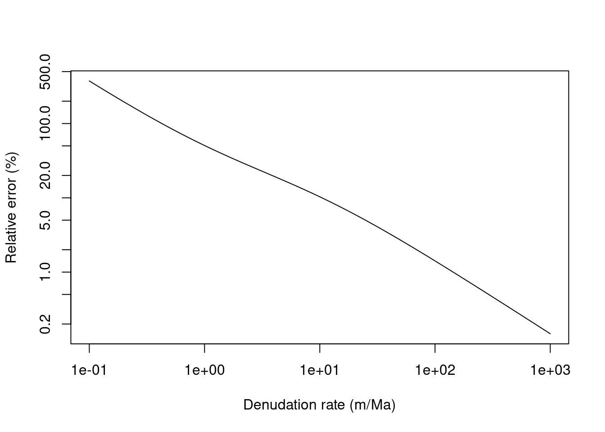

5 Application to exposure dating
5.1 Back to the evolution of concentration
We first consider the evolution of concentration with time \(t\).
The computation will be carried out at the surface (\(z=0\)), but this could be done at any arbitrary depth.
We also consider that \(\varepsilon = 0\) and that there is no inheritance.
The starting equation above becomes, \[
C(t)=\sum_i \frac{P_i}{\lambda}(1-e^{-\lambda t})
\]
For the sake of the example we are going to compute that by hand, and compare with our results above obtained with the solv_conc_eul function,
Code
# set up
altitude = 1000 # elevation in m
latitude = 45 # latitude in degrees
nuc = "Be10"
P = atm_pressure(alt=altitude,model="stone2000") # compute atmospheric pressure at site
S = scaling_st(P,latitude) # compute the scaling parameters according to Stone (2000)
t = seq(0,200e3,by=100) # a vector containing time from 0 to 100 ka by 100 a steps
Pspal = prm[1,nuc]*S$Nneutrons # scaled spallation production rate in at/g/y (st scaling)
Pstop = prm[2,nuc]*S$Nmuons # scaled stopped muons production rate in at/g/y
Pfast = prm[3,nuc]*S$Nmuons # scaled fast muons production rate in at/g/y
lambda = prm[4,nuc] # radioactive decay (1/y)
C = (Pspal + Pstop + Pfast) / lambda * (1-exp(-lambda*t))
plot(t/1000,C,type="l",col="coral",lwd=3,ylab="Concentration (at/g)",xlab="Time (ka)")
grid()
# check if this is ok
C2 = solv_conc_eul(0,0,t,0,prm[,nuc],S,Lambda) # compute concentration for pure exposure
lines(t/1000,C2,lty=2)
On thing to note in this graph is that time \(t\) is expressed as time elapsed since start of exposure, which we can not directly translate into the age BP, when dealing with radioactive decay and time variations in production rate.
5.2 Interpretation in terms of exposure ages
We are no going to make some simple calculations to convert our concentrations in terms of exposure age.
It basically solving for \(t\) the equation \(C_{mod}(t) = C_{mes}\). The left hand side is our modelled concentration, obtained for example with ou simple Eulerian model (solv_conc_eul), where we need to keep in mind all the hypotheses we make (\(z=0\), \(\varepsilon=0\), \(C_0=0\))
We are going to use an example from Protin et al. (2019), using sample ARG-16-9. Here are the characteristics of this sample.
Code
rho = 2.7
altitude = 2252 # elevation in m
latitude = 45.97 # latitude in degrees
longitude = 6.96 # longitude in degrees
Ss = 0.939*exp(-2.6*rho/Lambda[1]) # factor accounting for topographic shielding and sample thickness
Cmes = 26.8e4 # measured concentration (at/g)
Cmes_e = 1.3e4
#
P = atm_pressure(alt=altitude,lat=latitude,lon=longitude,model="era40") # compute atmospheric pressure at site
S = scaling_st(P,latitude) # compute the scaling parameters according to Stone (2000)Now, for example we can make some guess about the exposure age and see what is the difference with the measured concentration.
Code
age = 10e3 # a
Cmod = solv_conc_eul(0,0,age,0,prm[,"Be10"],S*Ss,Lambda) # compute concentrationWe could try make Cmod equal to Cmes by trial and error, but we can be more systematic,
Code
age = seq(0,20e3,by=10)
Cmod = rep(NA,length(age))
for (i in 1:length(age)){
Cmod[i] = solv_conc_eul(0,0,age[i],0,prm[,"Be10"],S*Ss,Lambda) # compute concentration
}
imin = which.min(abs(Cmod-Cmes))
res = age[imin]
plot(age,Cmod-Cmes,type="l",main=paste(res,"a BP"),col="coral",lwd=2)
abline(h=0)
abline(v=res)
TODO Compare with the age from table 1 from Protin et al. (2019). Comment about the possible causes for the differences?
We can be even more efficient by using an simple optimization approach to solve \(C_{mod}(t) = C_{mes}\), using the built in optimize function. We just define a function to be optimized (search of minimum) and launch a search over an age range. We are looking for the minimum value of \(|C_{mod}-C_{mes}|\)
Code
fun_opt <-function(t,Cmes,prm,S,Lambda){
Cmod = solv_conc_eul(0,0,t,0,prm[,"Be10"],S,Lambda)
return(abs(Cmod-Cmes))
}
res = optimize(fun_opt,c(0,50e3),Cmes,prm,S*Ss,Lambda)
print(res)## $minimum
## [1] 12478.57
##
## $objective
## [1] 0.00085133475.3 Time varying production rates
We are now going back to the time varying-scaling parameters
Code
data = data.frame(t1=seq(0,50e3,length.out=2000)) # we build a dataframe to store results
data$t2 = max(data$t1) - data$t1 # time BP
data$vdm = get_vdm(data$t2,model="musch")
data$rc = vdm2rc(data$vdm,latitude,model="elsasser54")
data$lm = scaling_lm(P,data$rc)
plot(data$t2,data$lm,type="l",xlab="Age BP (a)",ylab="Scaling factor")
abline(h=S$Nneutrons,col="red")
abline(h=mean(data$lm),lty=2)
In this case we can not use the same equations for the evolution of TCN concentration as above, because we need to account for \(P(t)\). We are going to use, \[C_{mod}(t) = \int_0^t P(t)e^{-\lambda t}dt\] Note : it is usually considered that production by muons is much less affected than that by neutrons by the magnetic field variations.
Below we first compare how the concentration evolves through time with the two approaches.
Code
library(pracma) # useful library containing the cumtrapz function for trapezoidal integration
data$C1 = solv_conc_eul(0,0,data$t1,0,prm,S*Ss,Lambda)
data$C2 = cumtrapz(data$t1,(prm[1]*data$lm*Ss+(prm[2,"Be10"] + prm[3,"Be10"])*Ss*S$Nmuons)*(exp(-prm["lambda",'Be10']*data$t1)))[,1]
plot(data$t1,data$C1,type="l",xlab="time (a)",ylab="Concentration (at/g)",col="cyan4")
lines(data$t1,data$C2,col="darkgoldenrod2")
legend("topleft",c("st","lm"),lty=1,col=c("cyan4", "darkgoldenrod2"))
We can solve solve \(|C_{mod}-C_{mes}|\) for \(t\) with the same approach as the st case,
Code
compute_C<-function(t1,prm,P,lat,Lambda,S){
data = data.frame(t1=seq(0,t1,length.out=1000)) # we build a dataframe to store results
data$t2 = max(data$t1) - data$t1 # time BP
data$vdm = get_vdm(data$t2,model="musch")
data$rc = vdm2rc(data$vdm,lat,model="elsasser54")
data$lm = scaling_lm(P,data$rc)
Cmod = trapz(data$t1,(prm[1,"Be10"]*data$lm+(prm[2,"Be10"] + prm[3,"Be10"])*S$Nmuons)*(exp(-prm["lambda",'Be10']*data$t2)))
return(Cmod)
}
fun_opt2 <-function(t1,Cmes,prm,P,lat,Lambda,S){
Cmod = compute_C(t1,prm,P,lat,Lambda,S)
return(abs(Cmod-Cmes))
}
P = atm_pressure(alt=altitude,lat=latitude,lon=longitude,model="era40") # compute atmospheric pressure at site
S = scaling_st(P,latitude) # compute the scaling parameters according to Stone (2000)
res = optimize(fun_opt2,c(0,50e3),Cmes,prm,P,latitude,Lambda,S*Ss)
print(res)## $minimum
## [1] 11343.93
##
## $objective
## [1] 0.0003504902Caveat we did those calculation using a number of simplification and numerical shortcuts ….